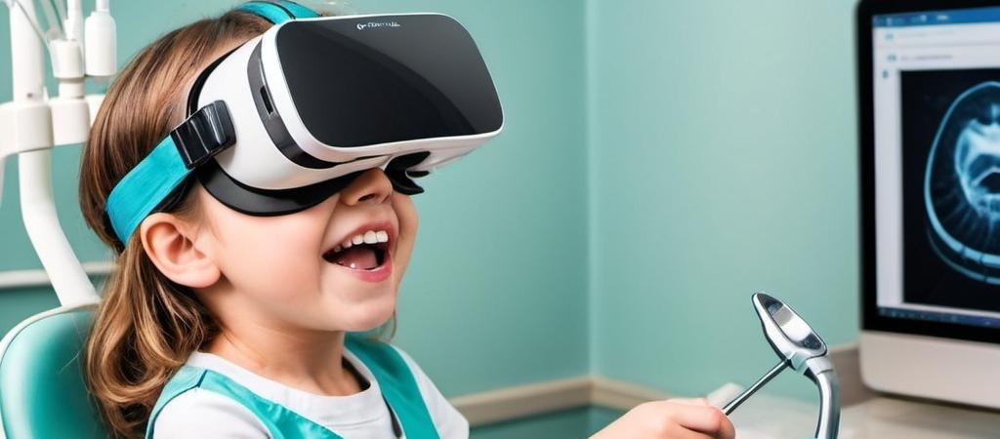
Exploring Multi-Stakeholder Perspectives on Using VR to Reduce Children's Dental Anxiety
Abstract
🔴
Background
: Dental anxiety is prevalent among children, which can lead to missed treatment and potential negative effects on their mental well-being.
🟡Challenges with existing solutions
: While interventions like cognitive behavior therapy and distraction techniques exist, they are typically limited to specialized settings and require extra time, making them less accessible.
🟢
Research goal:
We conducted participatory workshops with 13 children (aged 10-12) to explore how VR can alleviate dental anxiety. We also interviewed 13 parents and 2 dentists to gather multi-stakeholder perspectives.
🔵
Key findings
:
-
Children
prioritize immediate relief, social support, and a sense of control.
-
Parents
value educational opportunities to help maintain oral health.
-
Dentists
focus on treatment efficiency and safety.
Background
Dental anxiety
encompasses feelings of fear, anxiety, or stress linked to dental environments, which manifests as apprehension or reluctance toward dental treatments and contributes to ongoing emotional distress or discomfort.
Among children, dental anxiety may
delay or interrupt necessary dental treatments
,
potentially exacerbating oral health
, such as dental caries, tooth loss, and periodontal diseases. These oral health issues, in turn, can lead to
profound negative impacts
(e.g., diet problem sleeping problem) on children's growth and development. Thus,
addressing dental anxiety effectively is important
for the children to receive timely care and for their dentists to facilitate the treatment process.
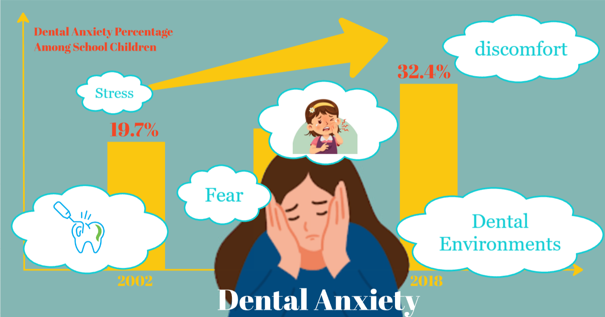
Currently, dental anxiety can be managed through pharmacological interventions , psychotherapeutic interventions , or a combination of both .
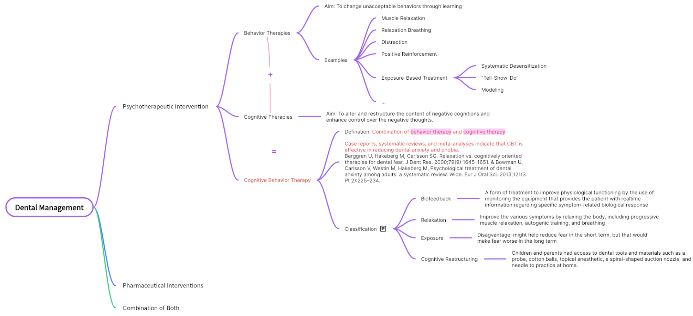
However , current management strategies, while effective to a certain extent, still have limitations. For instance, pharmacological interventions may entail adverse effects (including drug dependence, side effects, etc.), which are viewed as less acceptable by patients, and psychotherapeutic approaches necessitate prolonged engagement from specialized professionals, such as psychotherapists.
Virtual reality (VR) offers a compelling alternative to traditional management strategies by providing immersive , engaging experiences that can reduce anxiety and discomfort without the adverse effects commonly associated with pharmacological interventions or the extensive time commitment required for psychotherapeutic approaches.
Academic researchers, clinicians, and third-party companies have developed VR interventions to reduce dental anxiety, including VRET with 3D dental settings, VRR with immersive calming videos, and distraction techniques with virtual natural environments. These methods effectively reduced stress and anxiety in adults but limited research considers children's perspectives. Current VR research for children focuses on distraction, yet children's dental anxiety stems from multifaceted factors.
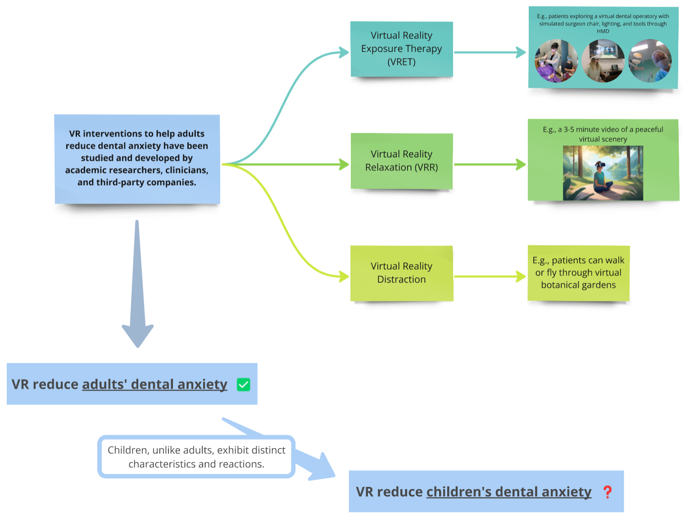
Therefore , a more comprehensive approach that holistically addresses both immediate discomfort and deeper anxieties is imperative for children.
To address the aforementioned research gap, a child-centered design approach is necessary. Consequently, co-design serves as an effective method to ascertain children's needs. Additionally, in co-design studies involving children, it is crucial to engage or maintain communication with their guardians, who possess insights into their children's needs and are pivotal in managing their daily lives. Furthermore, the perspectives of health providers are also significant.
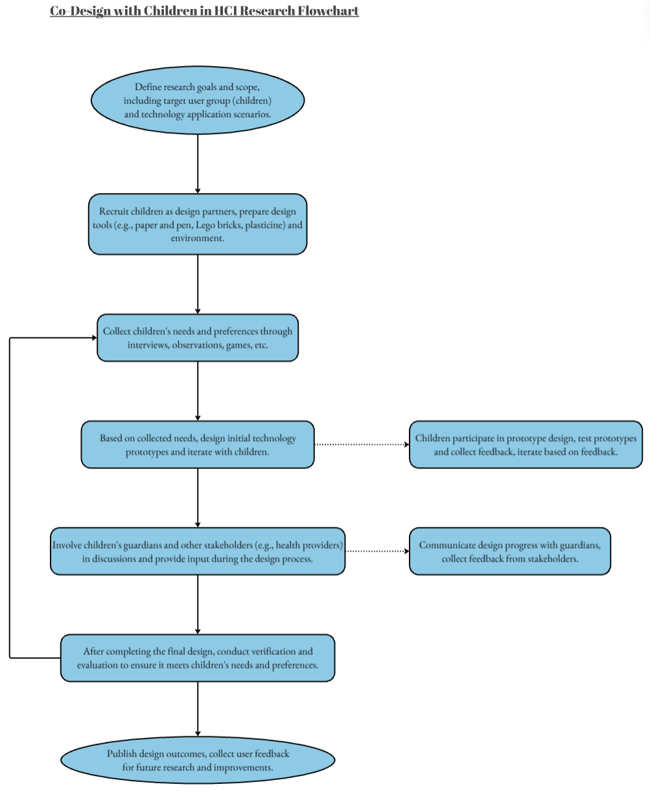
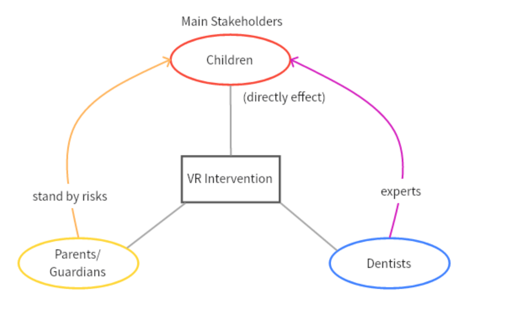
Therefore
, it is important to consider the perspectives of
multiple stakeholders
when gathering requirements.
Research Questions and Key Contributions
To fill the research gap, this work explores the perspectives of these stakeholders---focusing on children, parents, and dentists---to understand their real-life practices and envisioned design ideas for using VR to alleviate children's dental anxiety. Specifically, we ask the following research questions:
RQ1.
Centering on
children's
needs, how do
children
,
parents
, and
dentists
envision using VR to alleviate children's dental anxiety?
RQ2.
Centering on
parents'
and
dentists'
needs, what are their perspectives on using VR to alleviate children's dental anxiety?
(1) an empirical understanding of the needs and challenges associated with alleviating dental anxiety in children, with considerations of multiple stakeholders' perspectives, including dental professionals, guardians, and the children themselves.
(2) a synthesis of design considerations for developing virtual reality (VR) applications aimed at reducing dental anxiety for children.
Methodology: Co-design Worshop & Interview
Our study consists of three distinct activities, each targeting a specific stakeholder group:
- Five
co-design sessions with children
(
n
= 13) to understand their challenges and needs in the face of dental anxiety, in which children participants were asked to explore design ideas of using VR to alleviate such anxiety before, during, and after dental treatment.
-
Parent interviews
in the form of a group session based on their children's design ideas (
n
= 13), which focused on parents' acceptance, expectations, and concerns about using VR to help alleviate children's dental anxiety.
-
Dentist interviews
based on children's and parents' ideas and expectations (
n
= 2), which centered on how VR-based anxiety alleviation interventions may affect their workflow and treatment outcomes.
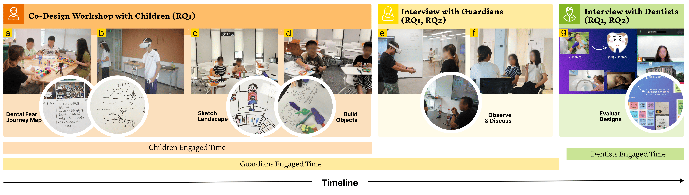
We Co-designed VR interventions to help children alleviate dental anxiety with three key stakeholders in three phases: phase 1 with children - brief interview with children (a) & inspired with VR (b) & design and discussion (c&d); phase 2 with guardians - VR experience (e) & interviews (f); phase 3 with dentists - interviews (g).
Our
children
and
guardians
participants were recruited from social media, posters distributed in the primary school, and snowball sampling. There were 44 guardians signed up for participation, and 13 met the following inclusion
criteria
:
The child of the guardians
(1) between 10 and 12 years old
(2) having received dental treatment within the past one year
(3) without psychiatric/mental or developmental diagnoses (e.g., ADHD, autism, etc.)
(4) experiencing moderate or severe dental anxiety, assessed by the Children's Fear Survey Schedule ---
Dental Subscale (CFSS-DS)
We also utilized a convenience sampling approach to recruit
two dentists
after the children's workshop. Both dentist participants had substantial expertise in treating pediatric patients within the age range of 10 to 12 years.
The following tables show the details of participants.
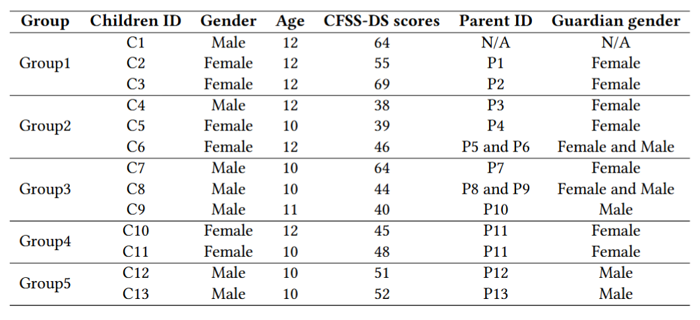
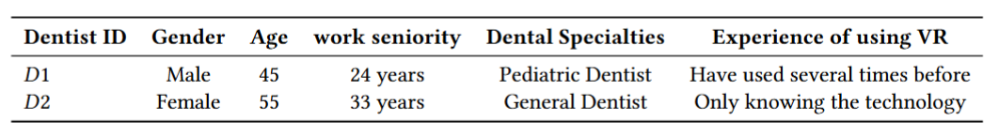
We conducted
five
co-design workshops involving a total of 13 children.
Each session
included
2-3 children
. This segmented approach was chosen over a single large group session for two primary reasons: (1) to facilitate more effective management of smaller groups, and (2) to maintain optimal session duration, thereby preserving children's attention and engagement throughout the process.
The following image shows the
process
of each children's co-design workshop.
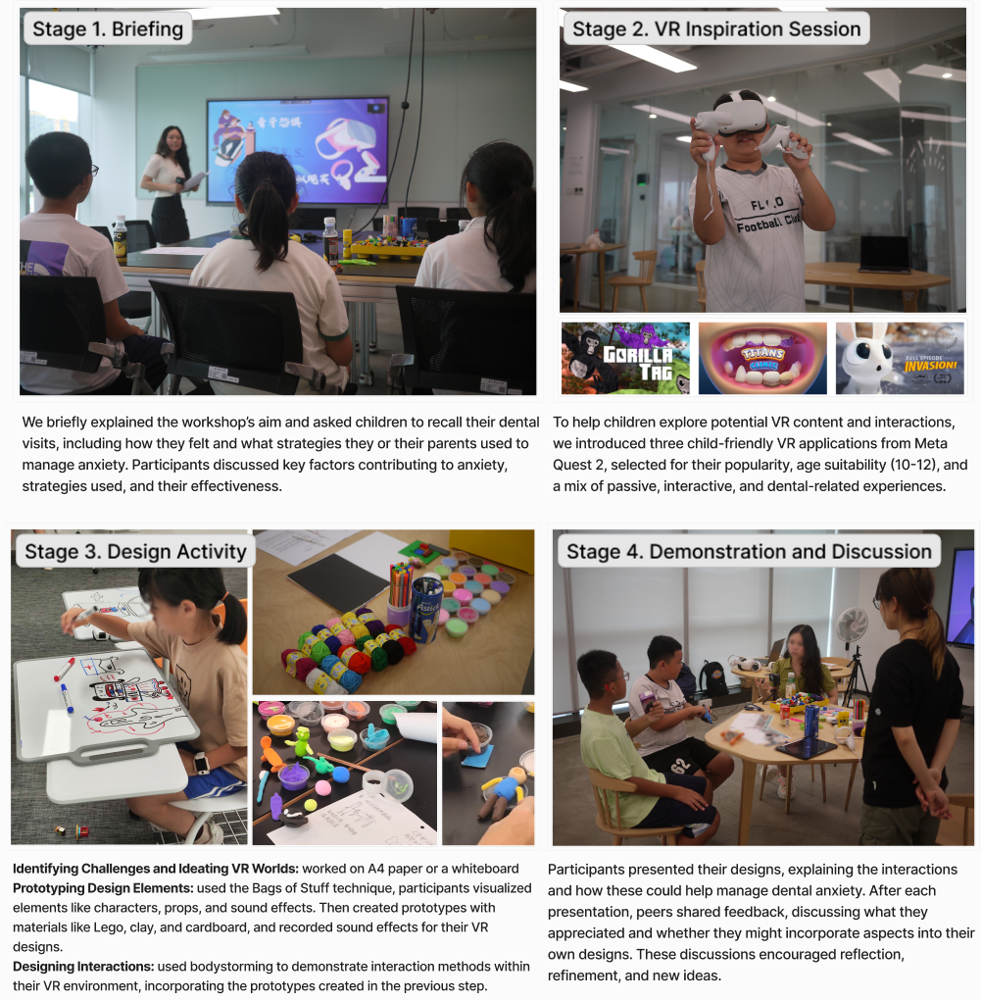
Guardians were escorted to a separate room where they could observe their children's design activities via an online platform, minimizing parental influence on the children's expression. Researchers conducted parent interviews during the children's VR inspiration (stage 2) and after their design discussions (stage 4), inviting parents to share their experiences with dental visits and thoughts on the designs.
The following image shows the
process
of each parents' interview.
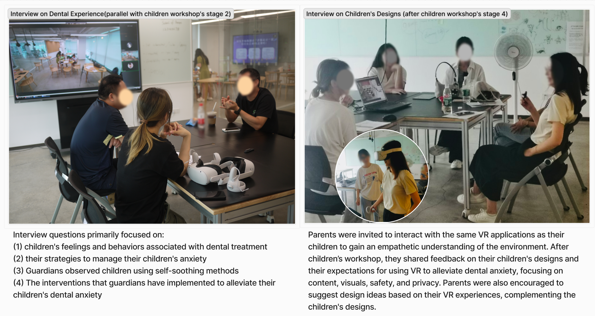
Due to dentists' busy schedules, interviews were conducted remotely and lasted about one hour. Before the interview, we summarized and presented the children's and guardians' designs. Dentists were invited to offer suggestions and concerns based on these designs . The interview aimed to gather insights on dentists' approaches to managing children's dental anxiety and the potential benefits and risks of using VR interventions in dental clinics.
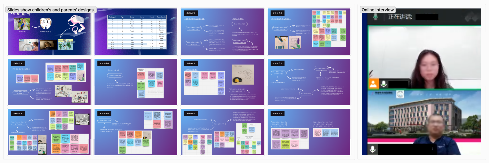
Data Analysis & Results
Our dataset includes video and audio recordings of the entire children’s co-design workshops and the interviews with guardians and dentists, as well as the prototypes created by the children. All the audio recordings were transcribed to text. Three researchers individually analyzed the first two audio transcriptions, taking a bottom-up approach to generate initial codes, and subsequently met to discuss and reach a consensus on these initial codes. Following this, the remaining transcriptions were randomly distributed among three researchers for independent initial coding. Each researcher's codes were then randomly checked by another researcher, who discussed any inconsistencies with the original coder. Subsequently, the first author created an initial thematic map, which was iteratively revised through discussion with the project supervisor. This process was repeated until a final set of themes emerged.
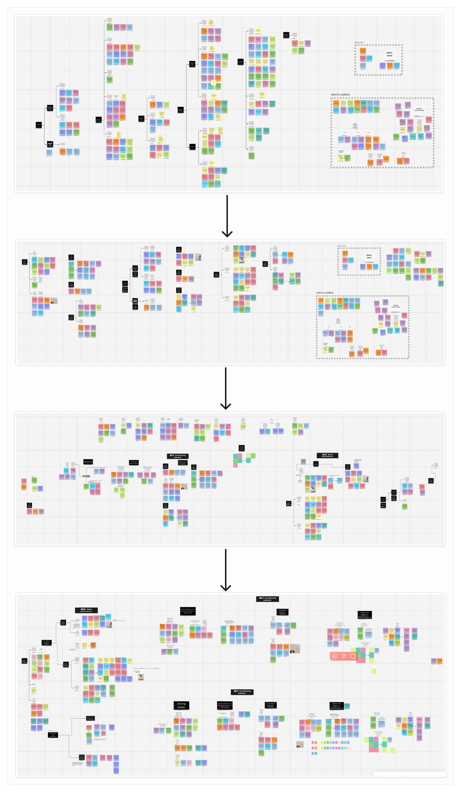
Our data gathered rich insights into the perspectives and needs of children, parents, and dentists in using VR to alleviate children’s dental anxiety across different dental visit stages. In the following, we first describe participants' current practices in managing children's dental anxiety, and then answer RQ1 (Children's envisioned opportunities and benefits) and RQ2 (Parents' and dentists' needs for support and concerns about risks), respectively.
All participants, including children, parents, and dentists, shared several strategies they employed in managing children's dental anxiety, although these strategies were not necessarily effective.
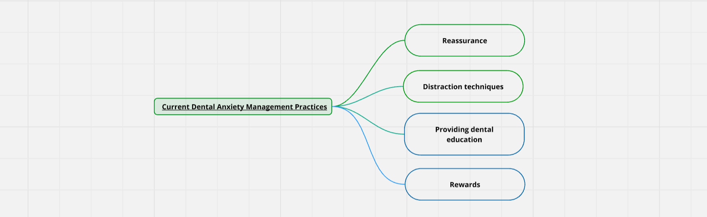
Children's design preferences and expressive primary focus on the `before treatment phases' and `during treatment phases.' Across these stages, we also incorporate feedback from parents, who voiced their ideas and concerns regarding their children's designs.
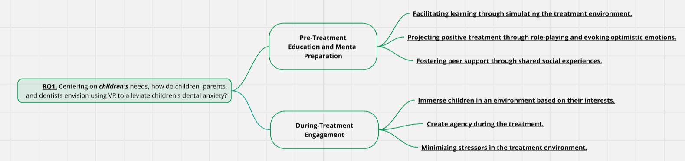
Parents generally expressed strong support for their children’s designs; however, from their perspective, they hope that the VR solutions not only address children’s dental anxiety but also foster awareness of dental care. Additionally, they have some health concerns regarding the technology used.
Dentists generally acknowledge that VR can help with children’s dental anxiety. However, from the doctor’s perspective, they have raised some concerns about how a child’s use of VR during treatment may affect their workflow.
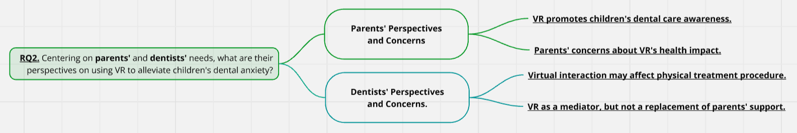
Discussions
In our results, we observed that children mapped their current anxiety management strategies onto the VR interventions they created. This mapping revealed that while some existing management techniques are effective, they have limitations that can be addressed through VR technology. Specifically, VR offers a solution to overcome the lack of certain traditional methods by providing a controlled, immersive, and interactive environment that caters to each child's individual needs.
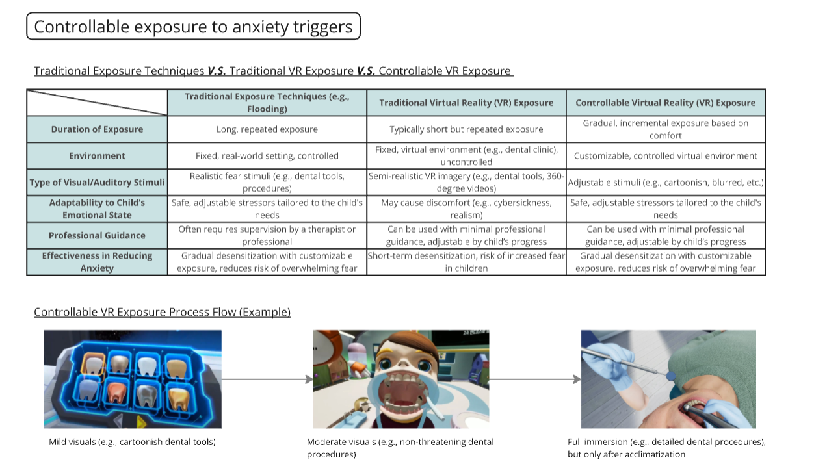
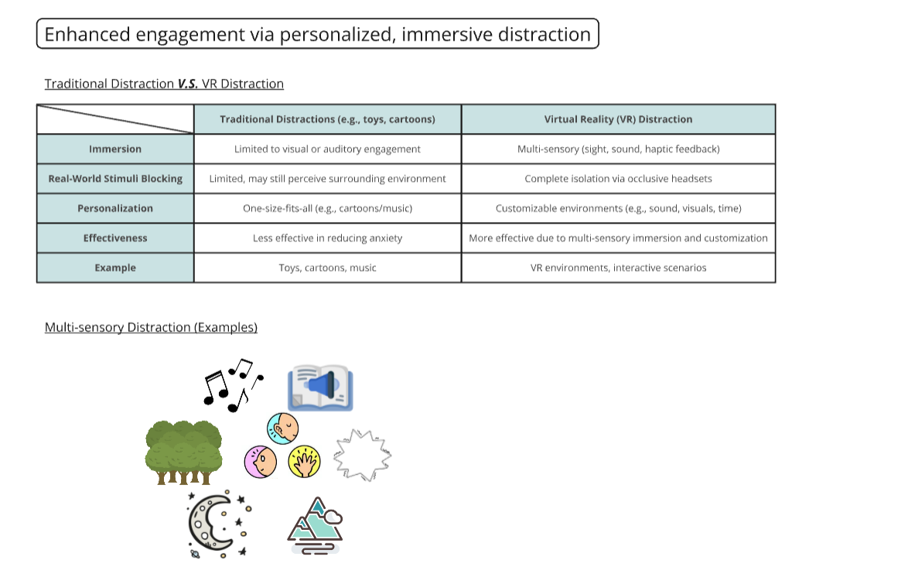
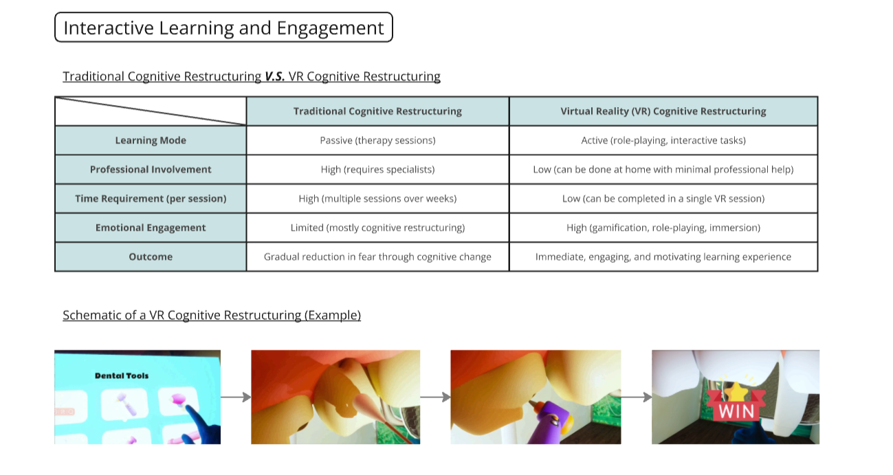
While VR offers many advantages in alleviating children's dental anxiety, interviews with dentists highlighted two key challenges in deploying such interventions.
First
, how to ensure treatment safety while children are immersed in VR? During the treatment, monitoring patients' reactions and adjusting settings accordingly balancing VR immersion with the precision required for dental procedures is delicate.
Second
, how to facilitate effective collaboration among dentists, parents, and children to maximize the technology’s benefits? Dental treatment for children is a team effort, and successful outcomes depend on the active involvement of multiple stakeholders.
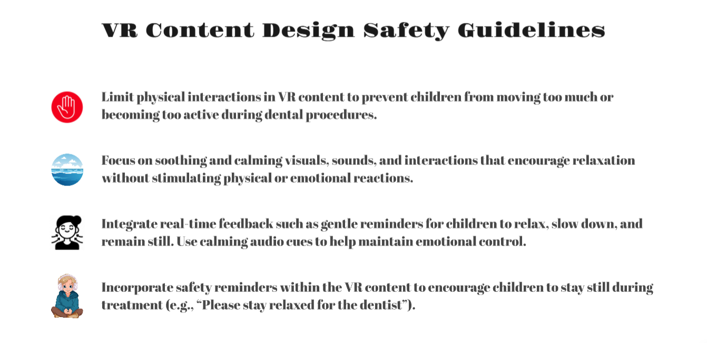
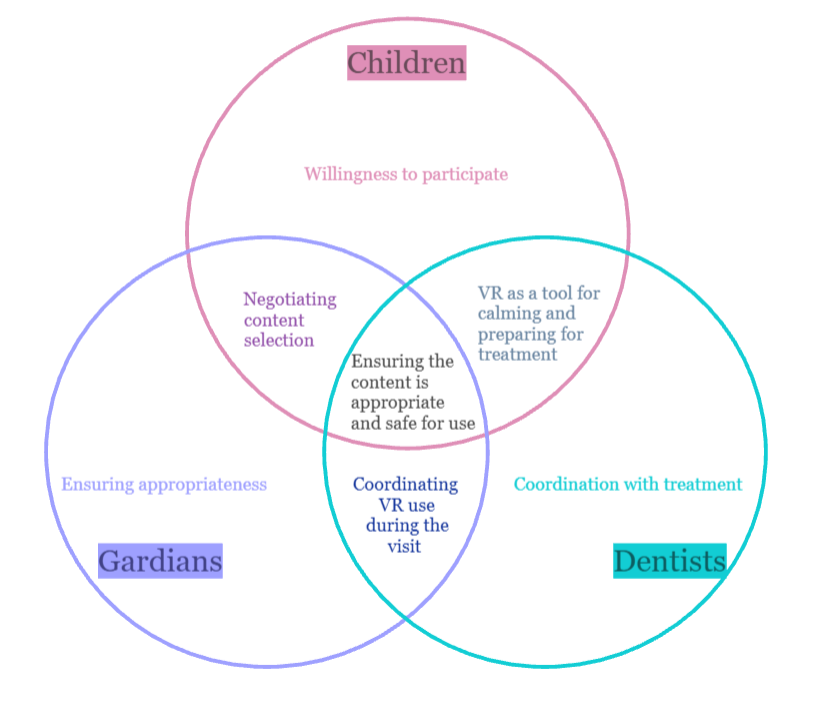
- Sample Diversity and Generalizability:
The study was conducted within a predominantly Chinese context, which may introduce cultural biases and limit the ability to generalize the findings to other populations. Cultural differences in attitudes toward technology, healthcare, and anxiety management may influence the results.
- Lack of Long-Term Design Considerations:
The focus was on a single system or feature, which may not fully account for the long-term effects or sustainability of the design. A more extensive, long-term approach involving multiple workshops could provide deeper insights and help identify issues arising from prolonged use.
HCI Needs First-Hand Information
Recruitment Challenges and the Essence of HCI
Due to the stringent recruitment criteria, the initial approach of using social media to recruit participants encountered difficulties in attracting suitable candidates. As a result, I turned to a more traditional method: printing recruitment posters and negotiating with security personnel at various elementary schools for their distribution. This experience has further solidified my understanding of the core essence of HCI — the indispensable need for interacting with individuals and gaining insights into their requirements.
Building Child Design Together: The Role of Multiple Stakeholders
When designing for children, a child-centered design framework is pivotal. Engaging in co-design processes enables us to directly elicit the nuanced needs and preferences of children. Furthermore, the inclusion of multiple stakeholders, including guardians and health providers, is crucial for achieving a holistic understanding of children's needs. Their diverse perspectives enrich the design process, thereby ensuring that the solutions developed are responsive to the complex realities of children's lives.